Itinerario — Agosto 2026
Partenza tentativa 7 agosto · 13 giorni · da Edinburgh a Edinburgh
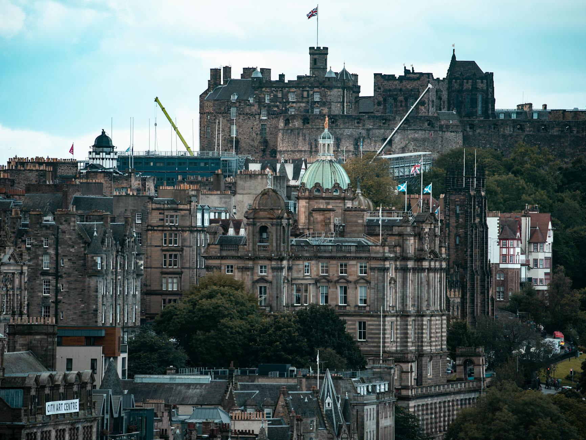
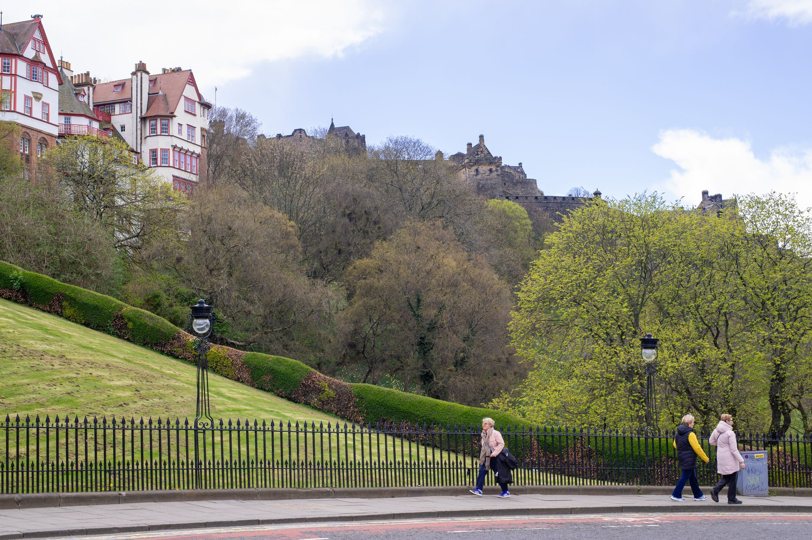

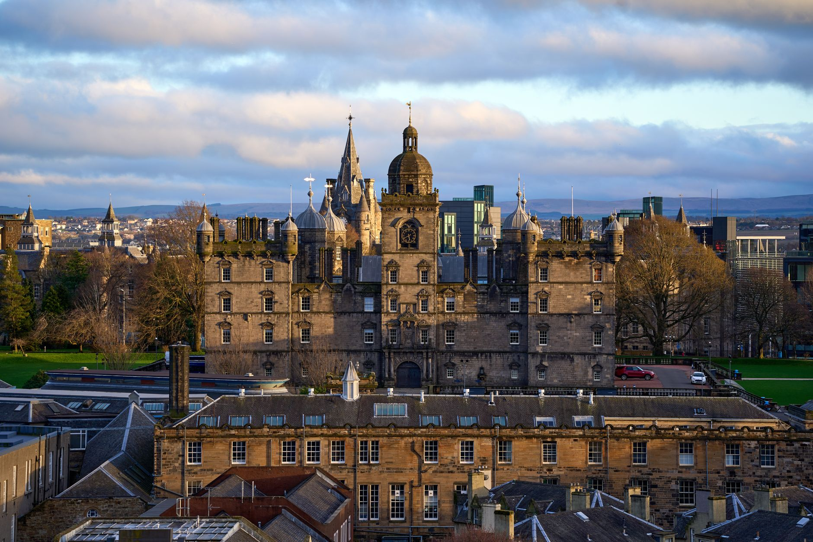
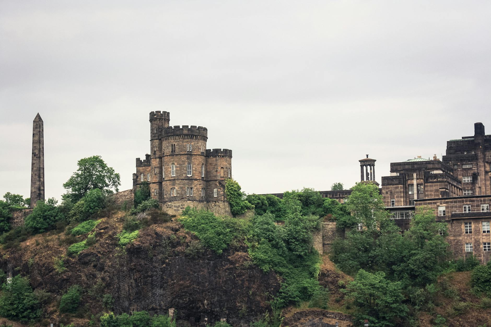
Edimburgo
Edimburgo è una delle capitali più belle d'Europa: il castello sulla roccia vulcanica domina il Royal Mile, e la città vecchia medievale contrasta con il distretto georgiano di New Town. In agosto il Fringe Festival trasforma ogni angolo della città in un palcoscenico.

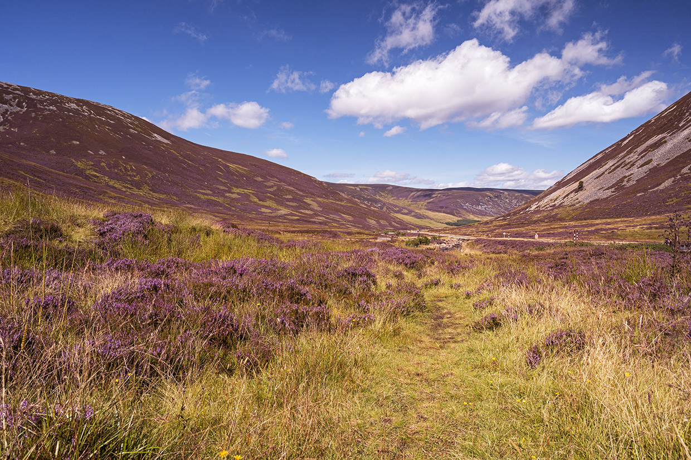
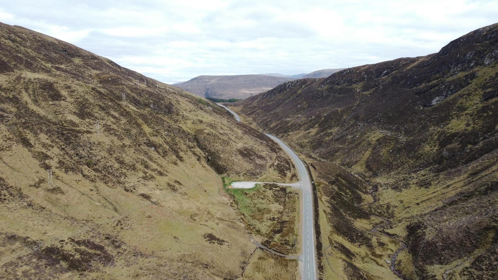
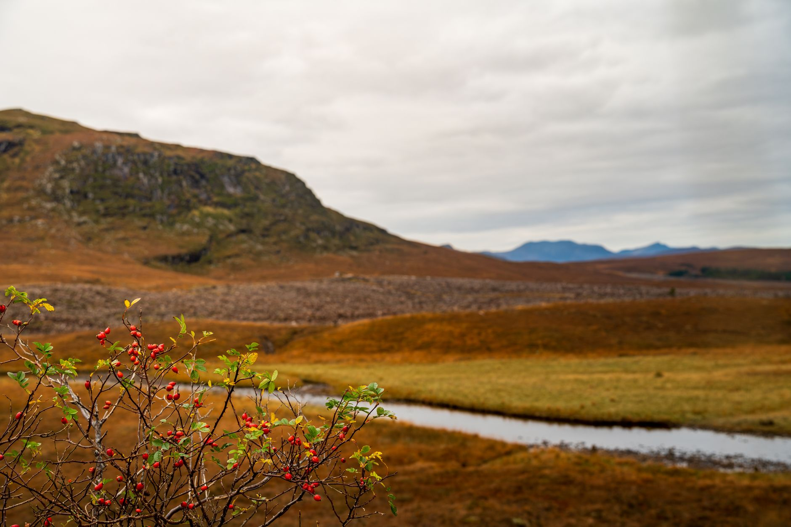
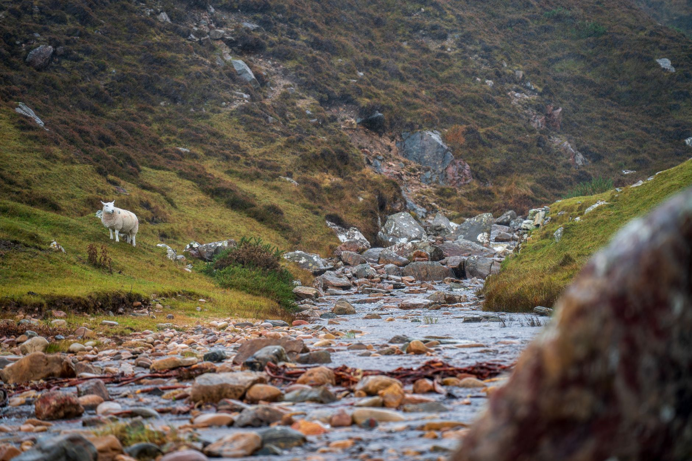
Speyside Scenic Drive
La strada da Balmoral a Grantown-on-Spey via Tomintoul è stata eletta la più scenografica di Scozia nel 2023: brughiera di erica viola, colline ondulate e i campi della Royal Deeside. E intorno, decine di distillerie dello Speyside.
Approfondisci →Dunnottar Castle
Il castello di Dunnottar sorge su una rocca a picco sul Mare del Nord: inaccessibile, grigio, cinematografico. Nelle vicinanze si trovano alcune delle distillerie più famose dello Speyside — da Glenfarclas a Glenfiddich.
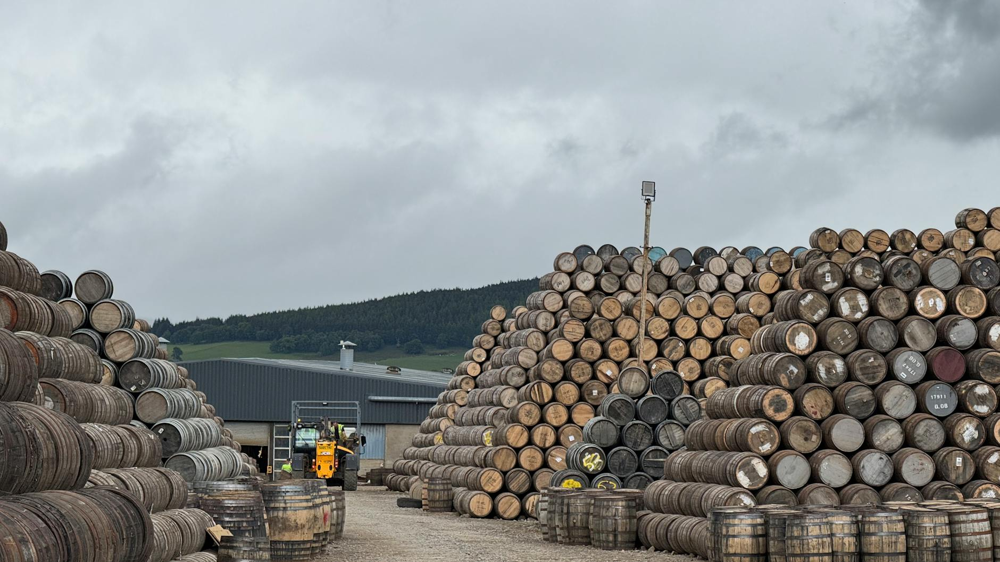

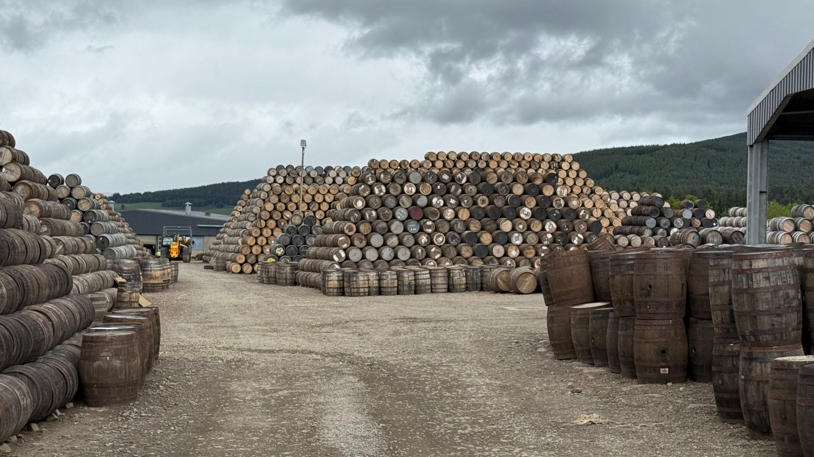
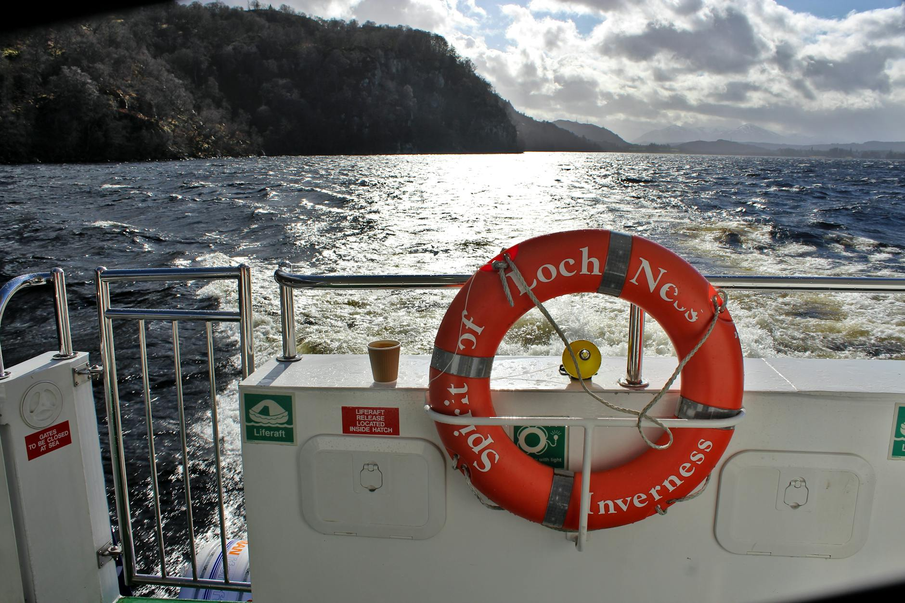
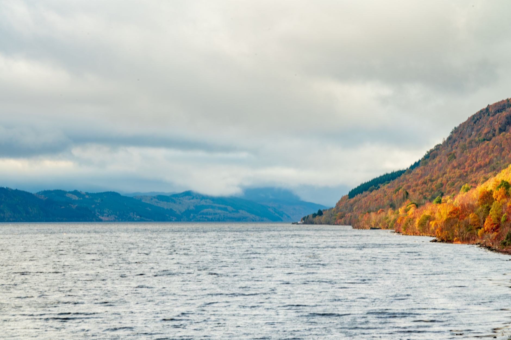
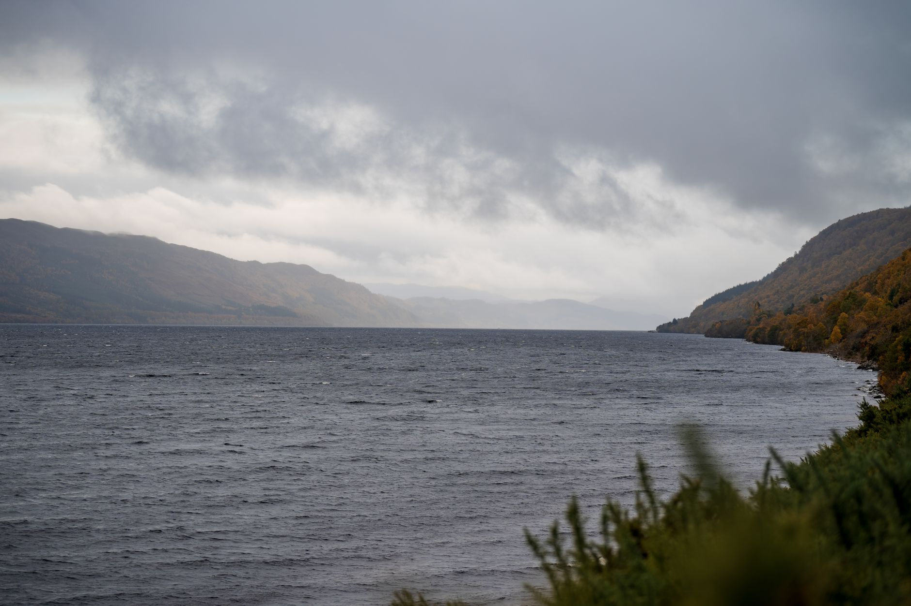
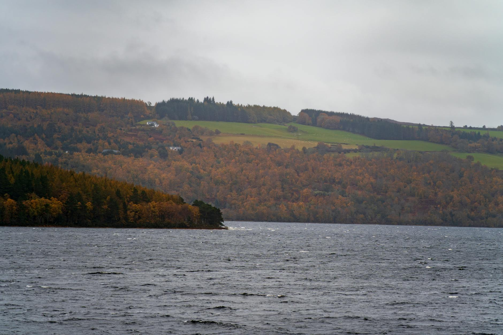

Inverness & Loch Ness
Inverness è il punto di partenza del North Coast 500. Il Loch Ness, lungo 37 km, è il lago più profondo delle British Isles — e la distilleria Glen Ord produce un single malt torbato da non perdere. Le rovine dell'Urquhart Castle affacciano direttamente sull'acqua scura.
Approfondisci →Caithness
Caithness è il punto più a nord della Scozia continentale: scogliere a picco sull'Atlantico, siti archaeologici neolitici tra i campi di erica e puffini che nidificano a pochi metri dai sentieri. Un paesaggio da un altro mondo.
Approfondisci →Sutherland
Sutherland è forse il paesaggio più selvaggio delle isole britanniche: strade a singola corsia che attraversano laghi, brughiere e montagne senza un villaggio per 50 km. Le comunità di pescatori sulla costa nord sembrano immuni al tempo.
Approfondisci →Wester Ross
Il Wester Ross è il tratto più spettacolare del NC500: montagne di quarzite bianca che sbucano dal mare, fiordi profondi e spiagge di sabbia bianca che sembrano caraibiche. Torridon e Applecross sono tra i panorami più drammatici di Scozia.
Approfondisci →Eilean Donan & Applecross
Il castello di Eilean Donan è il più fotografato di Scozia: sorge su un isolotto dove tre laghi si incontrano. La strada per Applecross — il Bealach na Bà — è uno dei passi di montagna più impegnativi della Gran Bretagna, con la vista su Skye dal valico.
Isola di Skye
Skye è la più grande isola interna delle Ebridi e il posto con la scenografia più selvaggia di Scozia: le montagne Cuillin, i basalti di Kilt Rock, le cascate di Mealt Falls, l'Old Man of Storr. Almeno due giorni, preferibilmente al mattino presto prima dei pullman.
Approfondisci →Glencoe & Fort William
Glencoe è una delle valli più drammatiche d'Europa: montagne di porfido rosa che precipitano su entrambi i lati della strada, e una storia di sangue che senti ancora nell'aria. Il Glenfinnan Viaduct, a pochi chilometri, è il viadotto del treno di Harry Potter.
Glasgow
Glasgow è la città più dinamica di Scozia: street art nel quartiere East End, il Kelvingrove Art Museum tra i più visitati del UK, mercati di vinile e birre artigianali nel West End. Più ruvida di Edimburgo, molto più autentica.